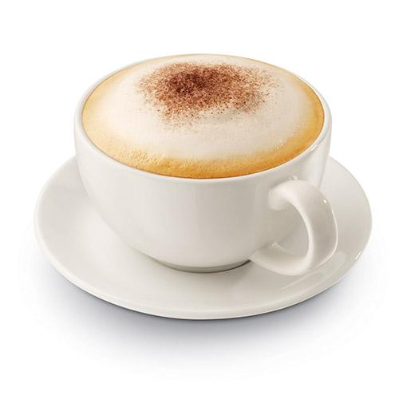
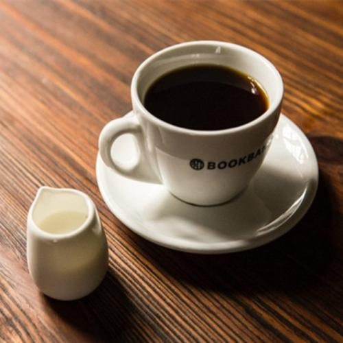

| COFFEE | PRICE |
|---|---|
| 拿铁 | ￥55.00 |
| 卡布奇诺 | ￥55.00 |
| 美式咖啡 | ￥55.00 |
| 摩卡 | ￥55.00 |
拿铁

拿铁咖啡是意大利浓缩咖啡与牛奶的经典混合，意大利人也很喜欢把拿铁作为早餐的饮料。意大利人早晨的厨房里，照得到阳光的炉子上通常会同时煮着咖啡和牛奶。喝拿铁的意大利人，与其说他们喜欢意大利浓缩咖啡，不如说他们喜欢牛奶，也只有咖啡才能给普普通通的牛奶带来让人难以忘怀的味道。
如果在热牛奶上再加上一些打成泡沫的冷牛奶，就成了一杯美式拿铁咖啡。星巴克的美式拿铁就是用这种方法制成的：底部是意大利浓缩咖啡，中间是加热到65～75℃的牛奶，最后是一层不超过半厘米的冷的牛奶泡沫。冰拿铁咖啡利用果糖与牛奶混合增加牛奶的比重，使它与比重较轻的咖啡不会混合，成为黑白分明的两层，形成如鸡尾酒般曼妙的视觉效果，再加上冰块，给人一种高雅而浪漫的温馨感觉。
卡布奇诺
卡布奇诺是一种加入以同量的意大利特浓咖啡和蒸汽泡沫牛奶相混合的意大利咖啡。此时咖啡的颜色，就像卡布奇诺教会的修士在深褐色的外衣上覆上一条头巾一样，咖啡因此得名。传统的卡布奇诺咖啡是三分之一浓缩咖啡，三分之一蒸汽牛奶和三分之一泡沫牛奶，并在上面撒上小颗粒的肉桂粉末。
卡布奇诺分为干和湿两种。所谓干卡布奇诺(Dry Cappuccino)是指奶泡较多，牛奶较少的调理法，喝起来咖啡味浓过奶香，适合重口味者饮用。至于湿卡布奇诺(Wet Cappuccino)则指奶泡较少，牛奶量较多的做法，奶香盖过浓呛的咖啡味，适合口味清淡者。湿卡布奇诺的风味和时下流行的拿铁差不多。一般而言，卡布奇诺的口味比拿铁来得重，如果您是重口味不妨点卡布奇诺或干卡布奇诺，您如果不习惯浓呛的咖啡味，可以点拿铁或是湿卡布奇诺。
美式咖啡
“美式咖啡”（英文：Americano，意大利语：Caffè Americano）咖啡的一种，是最普通的咖啡。是使用滴滤式咖啡壶所制作出的黑咖啡，又或者是意式浓缩中加入大量的水制成。美式咖啡口味比较淡。因为一般的萃取时间相对较长（大概四五分钟），所以咖啡因含量较高。
你可以在纯粹的黑咖啡里，加一点点糖、奶；你也可以欧式一点，像非洲和阿拉伯地区那样在咖啡中加入肉桂等香料；如果你不习惯咖啡苦涩味，也可以在你的咖啡里加一点你喜欢的果汁……不过，喝一杯原汁原味的黑咖啡，能够品尝到咖啡本身浓郁的风味，会被看作是品尝咖啡的行家里手。不论怎么喝，品尝咖啡也还是有一些讲究和知识的。
摩卡
摩卡咖啡其历史要追溯到咖啡的起源。它是由意大利浓缩咖啡、巧克力酱、鲜奶油和牛奶混合而成，摩卡得名于有名的摩卡港。十五世纪，整个中东非咖啡国家向外运输业不兴盛，也门摩卡是当时红海附近主要输出一个商港，当时咖啡主要是集中到摩卡港再向外输出的非洲咖啡，都被统称摩卡咖啡。而新兴的港口虽然代替了摩卡港的地位，但是摩卡港时期摩卡咖啡的产地依然保留了下来，这些产地所产的咖啡豆，仍被称为摩卡咖啡豆。
摩卡咖啡恐怕是最受女孩子欢迎的咖啡品种，这缘于它浓厚的巧克力味和牛奶味，绝大多数对咖啡有略微了解的人会认为它只是在拿铁中添加了巧克力。这种说法不算错，但不完全正确。这种说法只将摩卡当做了咖啡的一种“制作方法”，而完全忽视了真正的摩卡其实是咖啡一个“品种”。只不过能够喝到地道的“品种”摩卡的人实在是不多。地道的摩卡怕是不太容易被女孩子很快爱上的，它除了具有天然的巧克力余味外，辛辣、刺激、带有浓郁的酒香是它不太温柔的一面。